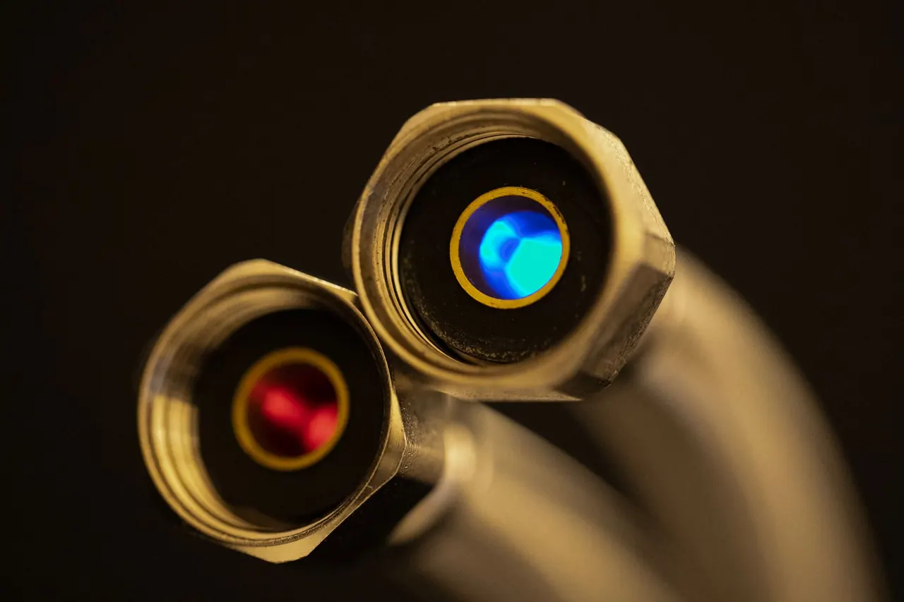

Serving Redlands and Nearby Neighborhoods
We work out of Redlands and cover the whole city plus the surrounding San Bernardino County area. Downtown Redlands means older homes with copper pipe and mature trees over the sewer lines. North Redlands runs newer, with more PEX tubing and slab construction. Either way, we know what tends to fail and where to look first.
Local teams, familiar routes
Serving Redlands and Nearby Neighborhoods
We work out of Redlands and cover the whole city plus the surrounding San Bernardino County area. Downtown Redlands means older homes with copper pipe and mature trees over the sewer lines. North Redlands runs newer, with more PEX tubing and slab construction. Either way, we know what tends to fail and where to look first.
Local coverage
Service coverage built around practical routes.
We work out of Redlands and cover the whole city plus the surrounding San Bernardino County area. Downtown Redlands means older homes with copper pipe and mature trees over the sewer lines. North Redlands runs newer, with more PEX tubing and slab construction. Either way, we know what tends to fail and where to look first.
Leak Detection Redlands CA638 Tennessee St, Redlands, CA 92374, USA
Where we work
One local team. A lot of ground covered.
Your next step is waiting
Need Leak Detection Redlands CA Today?
We answer 24/7, run same-day slots across Redlands and San Bernardino County, and quote flat rate before we start. One call gets a licensed tech on the way. Call +19097294657 now.